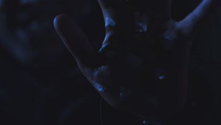
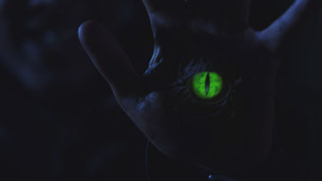
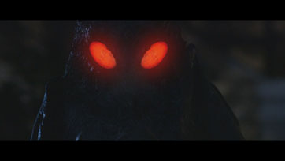
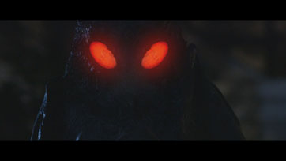

Dave Paterson VFX
About Me
I am a VFX artist currently in second year of Sheridan College’s Bachelor of Film and Television program.
If you like my work and are interested in working with me, send me an email.
You can contact me at Dave@DavePatersonVFX.ca
A detailed text breakdown of my reel can be found here.
Spotify - 2015
Hangloose Media

I am the Door - 2011
Sheridan Media Arts 3rd Year - VFX Award Nominee


Memories of the Mothman - 2014
Sheridan Media Arts 2nd Year
 

Lucky Day - 2013
Sheridan Media Arts 1st Year

Copyright © 2016 Dave Paterson VFX